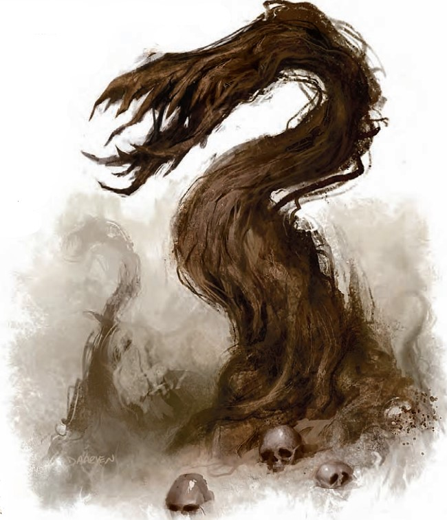

掘穴根蔓(Burrow Root) CR 8
大型植物
你看见土壤表面剧烈起伏流动着。突然,一条强壮,蜿蜒的根蔓从土壤表面爆发而出。这条根蔓足足有两个成年人那么长,它多刺的巨嘴挟着贪婪的饥渴向你啃噬而来。

|
生命骰: |
12d8+60(114hp) |
|
先攻: |
+6 |
|
速度: |
速度:30尺(6格),掘穴20尺 |
|
防御等级: |
22(-1体形,+2敏捷,+11天生),接触11,措手不及20 |
|
基本攻击/擒抱: |
+9/+21 |
|
攻击: |
啮咬+16(2d6+12/19-20加创伤)或尾刺+16(1d6+4加1体质加创伤) |
|
全力攻击: |
啮咬+16(2d6+12/19-20加创伤)或尾刺+16(1d6+4加1体质加创伤) |
|
面宽/触及: |
10尺/5尺 |
|
特殊攻击: |
分裂,创伤 |
|
特殊能力: |
盲视30尺,颤动感知60尺,植物特性免疫,速掘 |
|
豁免: |
强韧+13,反射+6,意志+5 |
|
属性: |
力量26,敏捷15,体质20,智力2,感知12,魅力7 |
|
技能: |
躲藏+13,聆听+1 |
|
专长: |
精通冲撞,精通重击(啮咬),精通先攻,强化天生武器(啮咬),猛力攻击 |
|
地域: |
沼泽,平原或山丘 |
|
组织: |
成群 |
|
挑战等级: |
8 |
|
宝物: |
标准 |
|
阵营: |
总是中立 |
|
进化: |
13-16HD(大型);17-25HD(超大型) |
|
等级调整: |
- |
掘穴根蔓是以血为食的活体植物。它们攻击的目的就是为了把鲜血洒在地面上,之后它们就能钻入地底安全地享用食物。
战斗:
一只掘穴根蔓的攻击分为三个阶段。感知到目标后,这种生物会飞快地接近猎物,之后从大地中冒出来给一记有力的啮咬。如果附近有多个敌人,掘穴根蔓会给每个人一次攻击,为的是让尽可能多的鲜血洒在地上。它会使用它的速掘能力在敌人之中迅速穿行,或是逃离一个特别难缠的敌人。一只掘穴根蔓本能地觉察到一个生物体内是否有血液存在――它会无视无血的生物,除非那只生物伤害到了它。
速掘(Speed
Burrow,EX):掘穴根蔓能在松软的泥土中快速移动。每日三次,以一个直觉动作,掘穴根蔓能够在地底移动20尺。这个移动不会引发借机攻击。
创伤(Wounding,EX):被掘穴根蔓攻击击中的活物会流血不止,每轮会失去1生命值。多个伤口的流血速度不叠加。持续的流血可以被一个DC21的医疗检定或一个治疗法术所终止。
分裂(Split,EX):当一个掘穴根蔓受到总生命值一半或者更多的伤害时,它会分裂。新的掘穴根蔓属性和它的母体一样。母体剩余的生命值在两者之间平分。母体在24小时内不能再次分裂,幼体在出生24小时内也不能分裂。
战斗
一只掘穴根蔓需要使用它的分裂能力来生殖后代，所以它会战斗到它失去了一半生命值为止，如果一只掘穴根蔓只剩下9点或更少的生命值，它会逃入地底，以地表渗下来的血液滋养自身。
遭遇范例
掘穴根蔓经常成群结队地狩猎，迁徙到某个区域为害一方。在文明开化的地区，他们要么被猎杀，要么被驱赶回边远的荒野。
眼魔，鹰身女妖，以及其它高智能的飞行生物会利用掘穴根蔓把地上的敌人从藏身之处赶出来。较低智力水平的飞行掠食者则栖息在掘穴根蔓出没的地方，随着掘穴根蔓发动攻击，俯冲下来捡漏。
鲜血踪迹（遭遇等级9）：地上出现挖开土壤的痕迹――这是掘穴根蔓留下的踪迹――一路延展到森林深处。一只掘穴根蔓一直在跟踪一只愤怒荆棘（怪物手册4第26页），尽管这么做必须深入坚硬的森林地形。因为它发现在愤怒荆棘的附近，更容易发现血液。掘穴根蔓的掘穴能力和愤怒荆棘的穿林能力使得它们即使在茂密的植被中穿行也如履平地。
在战斗时，愤怒荆棘会使用纠缠术定住敌人，以便掘穴根蔓发动攻击令敌人流血不止。
爪牙殖民地（遭遇等级14）：一只鹰身女妖弓箭手（怪物手册第151页）战略性地种了一排六个掘穴根蔓，目的是攻击经过的大篷车。她先用迷魂曲能力来吸引目标靠近。一旦掘穴根蔓接近它们的目标，她就从上方俯冲而下，用弓箭来压制她的对手。
生态
掘穴根蔓是生活土壤里的食肉动物。它们通过生物的血液维持生存，所以除非他们从第三方获得稳定的食物来源，否则他们总是扎根于人流密集的地区。
找到合适的地点后，它们便定居下来并开始繁殖。被吸干血的尸体标识出掘穴根蔓的活动区域。
掘穴根蔓是无性繁殖的，一旦生长得足够大或者受到重伤，它们就会分裂成独立的个体。由于它们很容易培育，一些狡猾而强大的生物会养殖掘穴根蔓作为守卫。
环境：掘穴根蔓的生存环境受其食物是否充足所限。它们通常在温带地区定居繁殖。掘穴根蔓喜欢土地松软、没有树木的地形，比如沼泽、平原或丘陵。它们生活在大路边，农田、水体或其它会吸引它们猎物的地方附近。
掘穴根蔓的移动方式会留下大片被翻开的土壤的痕迹。从远处看，这些痕迹看起来就像土地表面鼓起的扭曲静脉。被翻开的泥土很松软，使得在这上面移动视为困难地形。
典型身体特征：掘穴根蔓的长度在12到14英尺之间。它灰褐色的身体大部分粗细大约相当于人的头部，而其尾部逐渐收窄成为尖刺。其头部分裂成几十支长刺的分叉，形成木桶大小的血盆大口状的外观。它可以用口部咬伤猎物，但也可以通过将根部的尖刺插入目标的肉体直接吸取血液以获得养分。
阵营：由于掘穴根蔓的行为完全遵循生存本能，它们总是绝对中立的。
典型财宝
掘穴根蔓没有物质财富的概念。不过它们的猎物遗骸里依然会有财宝。
柔软、有机的材质如纸张，布料和皮革会被富含酶的土壤迅速分解，因此只有更坚硬的物件会保留下来。搜索掘穴根蔓周围的土地可以找到钱币、宝石和其它固体财物，价值等同于符合其挑战等级的标准财宝。
掘穴根蔓的学识
有知识(自然)等级的角色,可以了解有过掘穴根蔓的更多信息。当角色进行一次成功的技能检定时,可以得到如下所示的结果,包括更低检定能得到的结果。
|
DC |
结果 |
|
18 |
这是掘穴根蔓,一种奇怪的掘地植物。被掘穴根蔓所伤的伤口会流血不止,滴落在土壤里的鲜血是这种生物的食物。 |
|
23 |
掘穴根蔓可以在地底迅速掘进以逃离敌人。它的尾部是尖锐的根系,能够从受害者处吸取血液和少量生命力。 |
|
28 |
当受到一定伤害时,一只掘穴根蔓会分裂成两只独立的生物。 |